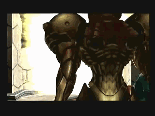

METROID PRIME
Metroid Prime es un videojuego de acción-aventura
en primera persona con componentes de disparos
y plataformas, desarrollado por Retro Studios
y distribuido por Nintendo para la consola Nintendo
GameCube entre los años 2002 y 2003.

TRAILER
By: Nicolas francisco PROYECTO